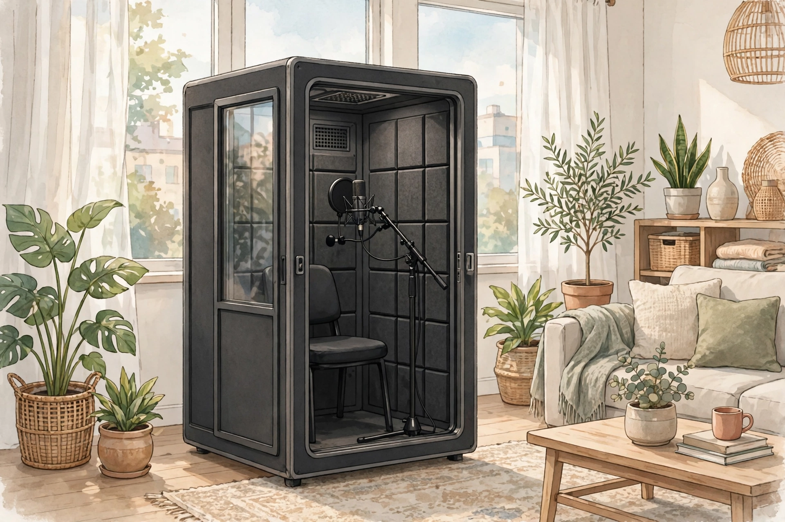

この記事の要点
- 部屋の中に、防音ブースを置きたいとき、どう選べばいいのでしょうか？
- 防音ブースは、部屋の中に、小さな部屋を作るようなものです。
- 防音ブースには、置くだけで使えるものと、組み立てが必要なものがあります。
💡 まず知っておきたいこと：防音ブースは、音を囲むものです
防音ブースは、部屋の中に、小さな部屋を作るようなものです。話す場所や、楽器を弾く場所を囲むことで、音が部屋全体に広がるのを、ある程度抑える考え方です。ただし、ブースの中の音が、まったく外に漏れないわけではありません。天井までの隙間や、ドアの隙間、換気のための穴からも、音は漏れます。まずは、どのくらいの音を、どのくらい減らしたいのか、という目的をはっきりさせることが大切です。
置くだけのものと、組み立てるものの違い
防音ブースには、置くだけで使えるものと、組み立てが必要なものがあります。置くだけのものは、賃貸でも取り組みやすく、移動もしやすい場合があります。組み立てるものは、大きくて、重い場合が多く、搬入経路や、床の耐荷重について、考える必要があります。どちらも、換気や、照明、電源の取り方について、考える必要があります。
換気と、広さと、暑さ
ブースの中は、密閉されるほど、空気がこもりやすくなります。換気のための工夫や、扇風機などの空気の流れについて、考える必要があります。広さは、使う目的に合っているかどうかが大切です。楽器を弾く場合と、話すだけの場合では、必要な広さが違います。夏場は、ブースの中が暑くなりやすい場合があります。体調にも、気をつけてください。
費用と、手間の考え方
防音ブースの費用は、製品の価格だけでなく、搬入や、組み立て、処分の手間も含めて考えるのが無難です。最初から大きなものを買うのではなく、小さな範囲から試して、効果を確認しながら考える、という進め方も、1つの方法です。賃貸の場合は、管理会社への確認や、原状回復の条件についても、考える必要があります。このページでは、内容に合う商品の例を、広告であることを明記したうえで、下に紹介しています。
参考：商品の例（広告）
このページの内容に合う商品の例です。購入する場合は、商品ページの仕様や価格をご確認ください。
組立式簡易防音ブース OTODASU II（オトダス2）を楽天市場で見る（広告）
価格：230,000円〜（2026年10月30日確認時点の表示価格。構成によって価格が変わります。受注生産品です。価格や仕様は商品ページでご確認ください。）
⚠️ 注意
このページの内容は、音響工事の専門的なアドバイスではありません。防音ブースで、すべての音を消すことはできません。目安として、無理のない範囲で考えてみてください。構造の変更や、電気工事が必要な場合は、管理会社や専門家への相談をご検討ください。